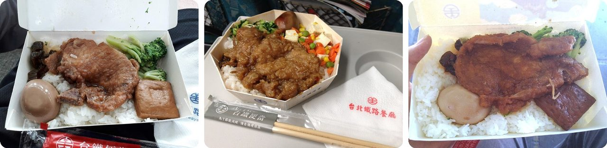
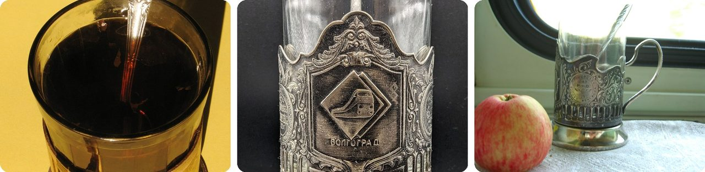
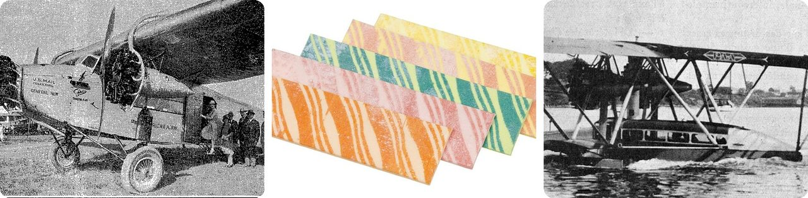
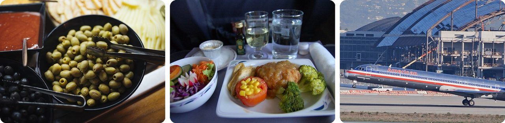

🌍 Top 10 Ridiculous Food Served on Trains and Planes
Nov 15, 2026
1. 🇯🇵 Japan's bullet-train ice cream is too hard to eat
 The vanilla ice cream sold on Japan's Shinkansen (bullet trains) is so famously hard that people online nicknamed it "Shinkansen too hard ice cream." Since 2021, that joke has been its official sales name.
The vanilla ice cream sold on Japan's Shinkansen (bullet trains) is so famously hard that people online nicknamed it "Shinkansen too hard ice cream." Since 2021, that joke has been its official sales name.
Here's why. The train cars have no freezer, so the carts keep the ice cream cold with dry ice. On top of that, it has extra milk fat and very little air whipped in. Cold plus dense → the plastic spoon won't go in, and sometimes the lid won't even come off.
The maker says to wait 10 minutes before eating it. Some people tried pouring hot coffee on top to soften it, and the coffee froze instead.
It's a snack that comes with a built-in 10-minute timer.
2. 🇯🇵 A Hokkaido train station's famous lunch is rice stuffed inside a squid
 In 1941, during World War II, Japan was short on rice. A lunch-box seller at Mori Station in Hokkaido noticed that squid were plentiful, so it stretched the rice by stuffing a little of it inside a whole squid.
In 1941, during World War II, Japan was short on rice. A lunch-box seller at Mori Station in Hokkaido noticed that squid were plentiful, so it stretched the rice by stuffing a little of it inside a whole squid.
The cook pulls off the tentacles, cleans out the squid, fills it with rice and simmers it in dashi (Japanese soup stock). Toothpicks keep the rice from falling out.
It's called ikameshi, "squid rice." In 1966 it went to a big ekiben (train-station lunch box) fair at a Tokyo department store, and by the second year it was the top seller. Now it's a Hokkaido food people seek out.
Basically, the squid is the lunch box.
3. 🇹🇼 Taiwan's railway pork chop lunch came back after 32 years and sold 90 times more than planned

Taiwan Railway sells about five million boxed lunches a year. The classic is a pork chop on rice with a braised egg, dried tofu and dried white radish, carried down the aisle by attendants at lunch and dinner time.One old pork chop version had been off the menu for 32 years. On June 9, 2000, it came back for a Railway Festival. The railway expected to sell about 1,000 boxes. They sold more than 90,000.
Imagine baking 1,000 cookies for a bake sale and finding 90,000 people in line.
4. 🇮🇳 Indian train chai comes in a clay cup you throw away
 A kulhad is a small clay cup with no shiny coating, made to be used once and tossed. Because the clay is bare, a little of the hot tea soaks into the walls, and many people love the "earthy" smell it gives the tea.
A kulhad is a small clay cup with no shiny coating, made to be used once and tossed. Because the clay is bare, a little of the hot tea soaks into the walls, and many people love the "earthy" smell it gives the tea.
In 2004, Indian Railways, led by minister Lalu Prasad Yadav, tried to bring kulhads back to trains and stations. The idea: cleaner than plastic, kinder to nature, and good work for village potters.
Critics did the math. The railways would have to get rid of about 1.8 billion clay cups a year, roughly 5 million every single day, and every one of them has to be baked in a fuel-burning kiln first.
It's a paper cup, if paper were made of dirt.
5. 🇷🇺 Russian trains still serve tea in fancy metal glass holders

A podstakannik (Russian for "thing under the glass") is a metal holder with a handle that wraps around a glass of tea. At home, they've mostly become souvenirs and gifts. On Russian Railways they're still used every day in sleeper cars and dining cars.The reason is the shaking. A bare glass of hot tea on a rocking train could tip over and burn someone. The holder makes the glass steadier, and you grab the handle instead of the hot glass. Their big rollout on the railways is tied to Sergei Witte in 1892.
Most of them come from one factory in the town of Kolchugino, and many are decorated with buildings, cities and moments from history.
Think of it as a sippy cup for grown-ups on a bumpy train.
6. 🇺🇸 A US railroad made "too big to sell" potatoes its mascot
 In 1908, Hazen Titus, who ran the Northern Pacific Railway's dining cars, heard that Washington's Yakima Valley farmers were feeding their potatoes to hogs. The spuds weighed 2 to 5 pounds each, about as much as a bag of flour, and buyers thought anything that big was too rough to eat.
In 1908, Hazen Titus, who ran the Northern Pacific Railway's dining cars, heard that Washington's Yakima Valley farmers were feeding their potatoes to hogs. The spuds weighed 2 to 5 pounds each, about as much as a bag of flour, and buyers thought anything that big was too rough to eat.
Titus tried baking them slowly and found they were delicious. He bought every potato over 2 pounds the farmers could grow, and from 1909 served them on his trains. "The Great Big Baked Potato" became the railroad's slogan for about 50 years.
And here's the twist. In 1914, the railroad put a 40-foot baked potato sign on the roof of its Seattle kitchen building. It lit up, its eyes winked, and a pat of butter on top glowed on and off.
Basically, the hogs' dinner became the star of the menu.
7. 🇺🇸 Pan Am's first flight served passengers only chewing gum

On Pan Am's first flight, there was no meal at all. The only thing handed out was chewing gum, meant to help stop airsickness.Planes back then were loud and uncomfortable, and passengers were often nervous about flying for the first time.
The first airline meals in the world had been served in 1919 on a London–Paris route: a choice of sandwiches and fruit. Pan Am later became the first airline to heat food in flight.
The whole in-flight menu fit in your pocket.
8. 🍱 Frozen airplane meals helped inspire the TV dinner
 After World War II, a Navy veteran named William Maxson came up with the "sky plate," a frozen meal heated up on board. It was first meant to give troops hot food.
After World War II, a Navy veteran named William Maxson came up with the "sky plate," a frozen meal heated up on board. It was first meant to give troops hot food.
Pan Am started serving these ready-made frozen meals on its planes. They inspired the TV dinners sold in American supermarkets. Airlines loved them for a simple reason: when a flight was canceled, frozen food didn't go to waste.
Most economy meals today still work the same way: made ahead, frozen, then heated in the plane's kitchen.
In other words, every microwave dinner is a little bit of airplane food.
9. 🫒 American Airlines saved $40,000 a year by taking out one olive

In 1987, Robert Crandall, the boss of American Airlines, reportedly had one olive removed from the salads in first-class meals. Nobody noticed.One olive is tiny. But multiply it by every first-class salad on every flight for a whole year, and the airline saved up to $40,000.
Crandall was famous for cutting costs. In another story he told himself, he cut security at a Caribbean warehouse until the only guard left was a recording of a barking dog.
It's like skipping one sprinkle on every donut and buying a car with what you saved.
10. 🇧🇪 Biscoff cookies got their name from an airline snack deal
 Lotus is a Belgian bakery that makes crunchy caramel-spice cookies. In 1986, it made a deal with Delta Air Lines to hand them out to passengers instead of peanuts.
Lotus is a Belgian bakery that makes crunchy caramel-spice cookies. In 1986, it made a deal with Delta Air Lines to hand them out to passengers instead of peanuts.
A Delta employee says he came up with the name "Biscoff" at that time, though Lotus disputes it. Either way, the brand then spread around the world, and other airlines started serving the cookies too.
In other words, a snack swap on a plane turned into a worldwide cookie.
Fun fact
At the opposite end from one missing olive was the Concorde, the supersonic jet flown by Air France and British Airways. Its passengers got 3 to 6 courses, including lobster and truffles, on fine china, sometimes cooked by celebrity chefs on board. It flew so high above the bumpy air that flight attendants could carry trays with 15 glasses down a 16-inch aisle without a ripple. A round trip cost $12,000 by 2003, which makes you wonder what other amazing machines were retired before most of us got a chance to ride them.
Photo credits (Wikimedia Commons)
- #1: Meiraku's Sujahta High quality super premium ice cream in Shinkansen 2014.jpg by Ippei Suzuki, CC BY 2.0
- #1: シンカンセンスゴイカタイアイス ショーケース.jpg by Indiana jo, CC BY-SA 4.0
- #1: Sujahta Super Premium Ice Cream vending machine.jpg by 電車(新幹線)でゴー！, CC BY-SA 4.0
- #2: Mori-ikameshi.JPG by Gpx-evo, CC BY-SA 4.0
- #2: Ika-Meshi-1.jpg by Evelyn-rose, CC0
- #2: Ikameshi 001.jpg by Derral Chen, CC BY-SA 2.0
- #3: TRA Taichung Railways Restaurant pork ribs rice box 20180722b.jpg by yunlin2003, CC BY 2.0
- #3: TRA Taipei Railways Restaurant pork ribs rice box 20120826.jpg by ayustety, CC BY-SA 2.0
- #3: TRA Taichung Railways Restaurant pork ribs rice box (23822844139).jpg by Chi-Hung Lin, CC BY-SA 2.0
- #4: Kulhad Chai.jpg by Gannu03, CC BY-SA 4.0
- #4: Garam Chai.jpg by Mihir0699, CC BY-SA 4.0
- #4: Kulhad wali chai.jpg by Akshay Sanjay Agrawal, CC BY-SA 4.0
- #5: Стакан чаю подстаканник.JPG by V.Vizu, CC BY-SA 3.0
- #5: Glasingo 240224 14.jpg by VladimirPF, CC BY-SA 4.0
- #5: Rzd chai.png by Morido, CC BY-SA 3.0
- #6: Northern Pacific Railway big baked potato circa 1910s.JPG by Northern Pacific Railway, Public domain
- #6: Northern Pacific Great Big Baked Potato comic postcard.jpg by Northern Pacific Railway, Public domain
- #6: Northern Pacific Potato Chef.jpg by Northern Pacific Railway, Public domain
- #7: Passengers boarding Pan-Am Airways Fokker airplane, 1928.jpg by The New York Times, Public domain
- #7: Fruit-Stipe-Gum-Sticks.jpg by Evan-Amos, Public domain
- #7: Sikorsky S-38 Pan American Airways L'Aéronautique March,1929.jpg by L'Aéronautique magazine, Public domain
- #8: Airline meal asiana.jpg by Architxture, CC BY-SA 4.0
- #8: Vietnam Airlines - In-Flight Meal - with Fruit.jpg by Wiki.cullin, CC BY-SA 4.0
- #8: Inflight meal on 3U8210 (20230927184832).jpg by N509FZ, CC BY-SA 4.0
- #9: Fresh green olives and black olives served at a food display.jpg by Shixart1985, CC BY 2.0
- #9: Continental Airlines domestic First Class dinner.jpg by Alex Steffler from Houston, TX, US, CC BY 2.0
- #9: American Airlines - N972TW - Flickr - skinnylawyer.jpg by skinnylawyer from Los Angeles, California, USA, CC BY-SA 2.0
- #10: 2020-02-25 11 41 14 A Lotus Biscoff cookie in the Franklin Farm section of Oak Hill, Fairfax County, Virginia.jpg by Famartin, CC BY-SA 4.0
- #10: Lotus biscoff vanilla flavour (1).jpg by Fumikas Sagisavas, CC0
- #10: Biscoff coffee corner on Pier 39, San Francisco, 2011.jpg by DimiTalen, CC0


.jpg){kind=link}


.jpg){kind=link}


.jpg){kind=link}